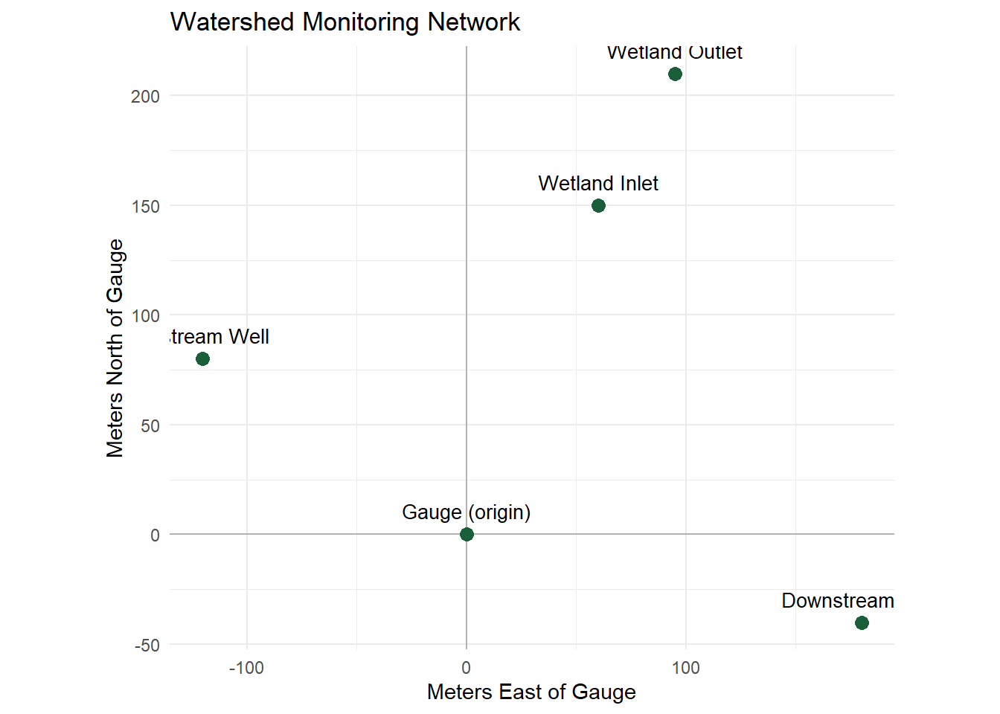

Chapter 2 Foundations: Numbers, Units & Coordinate Systems
2.1 Learning Objectives
By the end of this chapter, you will be able to:
- Convert between units using dimensional analysis, including compound and derived units.
- Plot and interpret points in a coordinate system.
- Compute the distance between two points and interpret it in context.
- Build simple models using coordinates and units drawn from environmental monitoring data.
2.2 Introduction
Imagine you’ve just joined a team monitoring water quality in a small watershed. You’re handed a spreadsheet: a list of sampling stations, each with a location, a nitrate concentration, and a date. Before you can plot a single trend line or fit a single model, you need to answer some very basic-sounding questions:
- Are these concentrations in the same units as the regulatory limit you’re comparing them to?
- How far apart are these two sampling stations, actually?
- If I place these stations on a map, where do they sit relative to each other?
None of these questions require calculus. They require the tools in this chapter: units, coordinates, and distance. They are the quiet infrastructure underneath every model you’ll build in this course — get them wrong, and everything built on top of them is wrong too.
Before We Start
Think of a time a mismatched unit caused confusion — a recipe, a road sign, a medication dose, a shipping label. What went wrong, and how was it caught (or not)?
2.3 Unit Conversion
2.3.1 Dimensional Analysis: Multiplying by 1
The safest way to convert between units is dimensional analysis: multiply by a fraction that equals 1, where the numerator and denominator are the same quantity expressed in different units. Because you’re multiplying by 1, the value of the quantity never changes — only its units do.
For example, since \(1000 \text{ m} = 1 \text{ km}\), the fraction
\[\frac{1 \text{ km}}{1000 \text{ m}} = 1\]
You can multiply any measurement by this fraction (or its flip) without changing what it represents — only how it’s expressed.
Worked Example: Converting a Flow Rate
A stream gauge reports a flow rate of \(2.4 \text{ m}^3/\text{s}\). What is this in liters per minute?
Step 1 — List your conversion facts.
- \(1 \text{ m}^3 = 1000 \text{ L}\)
- \(1 \text{ min} = 60 \text{ s}\)
Step 2 — Chain the conversion factors so unwanted units cancel.
\[ 2.4\ \frac{\text{m}^3}{\text{s}} \times \frac{1000\ \text{L}}{1\ \text{m}^3} \times \frac{60\ \text{s}}{1\ \text{min}} = 2.4 \times 1000 \times 60 \ \frac{\text{L}}{\text{min}} = 144{,}000 \ \frac{\text{L}}{\text{min}} \]
Step 3 — Check reasonableness. A flow of a few cubic meters per second is a real, moderately-sized stream, so a six-figure liters-per-minute value is plausible — it’s just a much smaller time unit and much smaller volume unit multiplied together.
2.3.2 A Subtlety: Concentration Units
Environmental data often reports concentration in mg/L (milligrams per liter) or in ppm (parts per million). For dilute aqueous solutions — which describes most natural water — 1 liter of water has a mass of very close to 1000 grams (1 kg), so:
\[ 1\ \frac{\text{mg}}{\text{L}} \approx 1\ \text{ppm} \quad \text{(dilute water only)} \]
This is a convenient approximation, not a universal law — it relies on the density of the solution being close to that of pure water, which breaks down for very concentrated solutions, for other fluids like air or soil, or when working by mass fraction in a non-aqueous medium. Always double check which convention a dataset or regulation is using before assuming the shortcut applies.
2.3.3 Worked Example: An Emissions Rate Conversion
A facility reports emitting 18 metric tons of CO₂ per year. Regulators want this expressed in kilograms per day.
Step 1 — List the givens and the target.
- Given: \(18\) metric tons / year
- Target: kg / day
Step 2 — List conversion facts.
- \(1\) metric ton \(= 1000\) kg
- \(1\) year \(\approx 365\) days
Step 3 — Chain the factors.
\[ 18\ \frac{\text{tons}}{\text{yr}} \times \frac{1000\ \text{kg}}{1\ \text{ton}} \times \frac{1\ \text{yr}}{365\ \text{days}} \approx 49.3\ \frac{\text{kg}}{\text{day}} \]
Step 4 — Interpret. This facility emits roughly 49 kg of CO₂ every day — a way of expressing the same yearly total that’s easier to compare against a daily operational limit.
2.3.4 A Famous Example: The Mars Climate Orbiter 🚀
Mismatched units aren’t just a classroom nuisance — they’ve caused real, expensive failures. In 1999, NASA’s Mars Climate Orbiter was lost as it approached Mars. The investigation found that one engineering team had provided thrust data in pound-seconds (an imperial unit), while the navigation software on the other end of the pipeline expected the value in newton-seconds (the metric unit). The software used the number as given, without converting it, and the resulting navigation error sent the spacecraft catastrophically off course.
No individual calculation was “wrong” — every team did their own arithmetic correctly. The failure was a unit mismatch at the handoff between two systems: a number changed hands without its units being checked. It’s the same failure mode as forgetting to convert mg/L to ppm before comparing a reading to a regulatory limit — just with a much higher price tag. The lesson scales down perfectly to a spreadsheet: always track units through every step, and always double-check them at every handoff, not just within your own calculation.
Concept Check: Unit Conversion
1. A monitoring station reports a pollutant level of 3 mg/L in a dilute water sample. Approximately how many ppm is this?
Click to reveal answer
About 3 ppm — for dilute aqueous solutions, mg/L and ppm are approximately interchangeable.
2. You need to convert 5 acres to square meters, and you know 1 acre ≈ 4047 m². Which fraction would you multiply by?
Click to reveal answer
\[5\ \text{acres} \times \frac{4047\ \text{m}^2}{1\ \text{acre}}\]
The acre units are in the denominator of the conversion factor so they cancel with the acres you’re converting from, leaving m².
3. Why doesn’t the mg/L ≈ ppm shortcut work for a very salty brine solution?
Click to reveal answer
The shortcut relies on 1 liter of solution having a mass close to 1000 g (the density of pure water). A concentrated brine is noticeably denser than pure water, so the same mass of solute represents a different ppm value than it would in dilute water.
2.4 Coordinate Systems
2.4.1 Locating Points in a Plane
A coordinate system lets us assign a precise location to a point using numbers. In the Cartesian plane, every point is described by an ordered pair \((x, y)\): how far to move horizontally (\(x\)) and vertically (\(y\)) from a fixed reference point called the origin, \((0,0)\).
For environmental work, the origin and axes are often chosen to make the numbers convenient — for instance, “meters east” and “meters north” of a reference stake at a field site, rather than raw latitude and longitude (we’ll work with true geographic coordinates once we cover angular measure in Chapter 7).
Setting Up a Local Grid
A field team sets up a reference stake at a wetland restoration site and calls it \((0, 0)\). They record each new sampling point as meters east (x) and meters north (y) of that stake.
Station A is 40 m east and 30 m north of the stake. Station B is 10 m west and 60 m north. What are the coordinates of each, using the convention that west and south are negative?
2.4.2 Environmental Application: A Monitoring Network
The table and plot below show five sampling stations placed around a small watershed, using a local meters-east / meters-north coordinate grid centered on the stream gauge.
| Station | East (m) | North (m) |
|---|---|---|
| Gauge (origin) | 0 | 0 |
| Upstream Well | -120 | 80 |
| Downstream Well | 180 | -40 |
| Wetland Inlet | 60 | 150 |
| Wetland Outlet | 95 | 210 |

Figure 2.1: Sampling stations plotted on a local coordinate grid centered on the stream gauge.
Notice that a negative x-coordinate means “west of the gauge,” and a negative y-coordinate means “south of the gauge” — exactly like the four quadrants of a standard Cartesian plane.
2.5 The Distance Formula
2.5.1 Deriving the Distance Formula
How far apart are two stations, say the Upstream Well at \((-120, 80)\) and the Downstream Well at \((180, -40)\)? The horizontal separation and vertical separation form two legs of a right triangle, and the straight-line distance between the points is the hypotenuse. By the Pythagorean theorem:
\[ d = \sqrt{(x_2 - x_1)^2 + (y_2 - y_1)^2} \]
This is the distance formula — it’s simply the Pythagorean theorem written in coordinate form.
2.5.2 Worked Example: Distance Between Two Wells
Using the Upstream Well \((-120, 80)\) and Downstream Well \((180, -40)\):
Step 1 — Identify the coordinates.
\((x_1, y_1) = (-120, 80)\), \((x_2, y_2) = (180, -40)\)
Step 2 — Substitute into the formula.
\[ d = \sqrt{(180 - (-120))^2 + (-40 - 80)^2} = \sqrt{(300)^2 + (-120)^2} \]
Step 3 — Simplify.
\[ d = \sqrt{90000 + 14400} = \sqrt{104400} \approx 323.1 \text{ m} \]
Step 4 — Interpret. The two wells are roughly 323 meters apart in a straight line — useful information if, for example, you’re deciding whether contamination could realistically spread from one well to the other through groundwater flow in a given time.
Concept Check: Distance Formula
1. Two air quality sensors sit at \((0, 0)\) and \((6, 8)\), in kilometers. How far apart are they?
Click to reveal answer
\[d = \sqrt{(6-0)^2 + (8-0)^2} = \sqrt{36+64} = \sqrt{100} = 10 \text{ km}\]
2. If two points have the same y-coordinate, what does the distance formula simplify to?
Click to reveal answer
The \((y_2-y_1)^2\) term becomes 0, so \(d = \sqrt{(x_2-x_1)^2} = |x_2 - x_1|\) — just the horizontal separation. This matches intuition: if two points sit on the same horizontal line, the distance between them is simply how far apart they are left-to-right.
3. Why does the distance formula use squared differences rather than just \((x_2-x_1) + (y_2-y_1)\)?
Click to reveal answer
Because the formula comes from the Pythagorean theorem, which relates the squared side lengths of a right triangle. Squaring also ensures a negative difference doesn’t cancel out a positive one — distance should always come out non-negative.
2.6 Practice: Multi-Step Conversions
2.6.1 What Are You Practicing?
These problems combine unit conversion with basic interpretation, using data from the watershed monitoring network introduced above. Some problems require you to convert units before you can compare or combine numbers; others ask you to combine a unit conversion with a coordinate or distance calculation.
2.6.2 How to Approach These Problems
- Identify what units you’re given and what units you need.
- Write out the conversion factor(s) you need as fractions equal to 1.
- Chain the factors so unwanted units cancel.
- Once units are consistent, do the underlying arithmetic or geometry (a distance calculation, a comparison, etc.).
- Check whether your final answer is a reasonable size for the real-world quantity it represents.
2.6.3 Practice Problems
1. The wetland inlet station reports a nitrate concentration of 0.008 g/L. Express this in mg/L, then decide whether it exceeds a 5 ppm regulatory threshold (for this dilute sample, treat mg/L ≈ ppm).
Click to reveal solution
\(0.008\ \text{g/L} \times \dfrac{1000\ \text{mg}}{1\ \text{g}} = 8\ \text{mg/L} \approx 8\ \text{ppm}\), which exceeds the 5 ppm threshold.
2. A well pump moves water at 15 gallons per minute. Given \(1\) gallon \(\approx 3.785\) L, express this rate in liters per hour.
Click to reveal solution
\[ 15\ \frac{\text{gal}}{\text{min}} \times \frac{3.785\ \text{L}}{1\ \text{gal}} \times \frac{60\ \text{min}}{1\ \text{hr}} \approx 3406.5\ \frac{\text{L}}{\text{hr}} \]
3. Using the monitoring station table above, find the straight-line distance between the Wetland Inlet \((60, 150)\) and Wetland Outlet \((95, 210)\), in meters.
Click to reveal solution
\[ d = \sqrt{(95-60)^2 + (210-150)^2} = \sqrt{35^2 + 60^2} = \sqrt{1225 + 3600} = \sqrt{4825} \approx 69.5 \text{ m} \]
4. A sensor logs temperature in degrees Fahrenheit, but your model needs Celsius. Using \(C = \dfrac{5}{9}(F - 32)\), convert a reading of 68°F to Celsius, then explain in one sentence why this conversion is not a simple multiply-by-a-fraction dimensional analysis problem like the others in this section.
Click to reveal solution
\(C = \frac{5}{9}(68-32) = \frac{5}{9}(36) = 20\)°C. Unlike the other conversions, this one requires subtracting 32 first — the Fahrenheit and Celsius scales don’t share a common zero point, so the conversion is an affine function (multiply and shift), not a pure scaling.
5. A watershed’s annual sediment load is reported as 2,400,000 kg/year. Express this as metric tons per day (1 metric ton = 1000 kg; use 365 days/year).
Click to reveal solution
\[ 2{,}400{,}000\ \frac{\text{kg}}{\text{yr}} \times \frac{1\ \text{ton}}{1000\ \text{kg}} \times \frac{1\ \text{yr}}{365\ \text{days}} \approx 6.58\ \frac{\text{tons}}{\text{day}} \]
6. The Upstream Well sits at \((-120, 80)\). A new proposed well site is 50 m directly east and 50 m directly south of it. What are the coordinates of the new site, and how far is it from the stream gauge at the origin?
Click to reveal solution
New site: \((-120+50,\ 80-50) = (-70, 30)\).
Distance from origin: \(d = \sqrt{(-70)^2 + 30^2} = \sqrt{4900+900} = \sqrt{5800} \approx 76.2\) m.
2.7 Skills Drills
These drills strip away the environmental context so you can build raw fluency with the mechanics. Show your work, then check your answer.
2.7.1 Unit Conversion Chains
Convert each quantity to the target unit.
- \(3.2\) km to m
- \(750\) mL to L
- \(4.5\) hours to seconds
- \(2\) metric tons to kg
- \(60\) mph to m/s (use \(1\) mile \(\approx 1609\) m)
- \(120\) mg/L to g/L
Click to reveal answers
- \(3200\) m
- \(0.75\) L
- \(16{,}200\) s
- \(2000\) kg
- \(\approx 26.8\) m/s
- \(0.12\) g/L